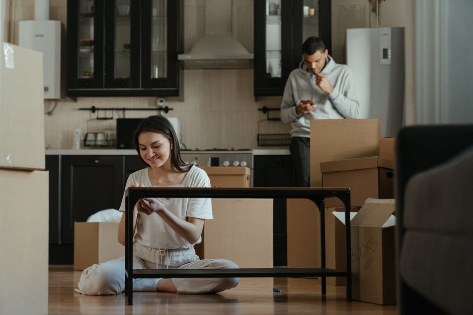

Organizing Small Spaces with Multi-Function Storage Boxes

Photo: dada _design / Pexels
Multi-purpose storage boxes (with lids, compartments or wheels) are handy in a small space. Here is how to choose and use them safely.
Choose the right boxes
- Measure the space (shelf, under the bed, closet) before you buy.
- Prefer boxes of the same size that stack well.
- Choose sturdy material, with handles and a lid that fits securely.
- Clear boxes make it easier to find what is inside.
Sort before you store
Sort items by category (clothes, shoes, cables, papers). Do not store what you no longer need: a box full of useless things does not save space.
Label
A label or color code on each box lets you find it without opening everything.
Stack safely
- Put heavy boxes at the bottom and light ones on top.
- Do not exceed the weight limit stated by the manufacturer.
- Do not stack higher than shoulder height: a falling pile can hurt.
- Never block an exit, a window or a radiator.
Be careful what you store
Do not store flammable products, chemicals or aerosol cans in boxes near a heat source or outlet. Keep cleaning products out of reach of children and pets.
Maintain
Wipe boxes with a damp cloth once or twice a year. If you store linens, make sure they are completely dry to prevent dampness and mold.
With good sorting, the right size and careful stacking, these boxes make a small space tidier and safer.
Recommended products
As an Amazon Associate, I earn from qualifying purchases.